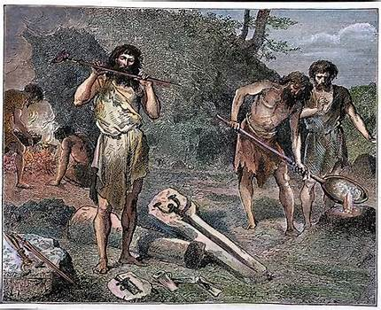
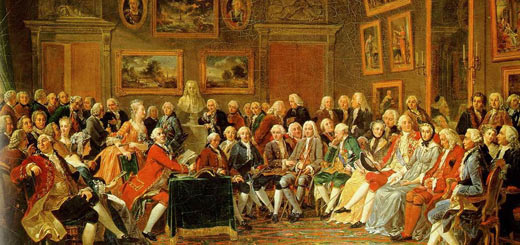

Las etapas o edades de la historia son las distintas épocas o segmentos de tiempo en que se suele dividir la historia de la humanidad,
con el propósito de facilitar su estudio y poder comprender sus movimientos y patrones principales. Se trata de divisiones convencionales,
relativamente arbitrarias, elaboradas y revisadas continuamente por los estudiosos de la materia desde hace siglos.
Acotar y organizar la historia de la humanidad no es un tema sencillo. Por un lado, los orígenes de nuestra especie son previos a los de una civilización organizada
y muy anteriores a la invención de un método de escritura que permitiera el registro de los eventos y de los pensamientos humanos.
Por otro lado, la especie humana es inmensamente diversa, y los intentos por definir criterios únicos para pensar su evolución particular
hasta el presente suelen dejar por fuera las particularidades de otras culturas, ya que no es fácil decidir qué cosa es lo “normal” o “usual”.
La división actualmente aceptada de la historia no siempre estuvo en vigencia, y se trata más bien de un invento reciente. A lo largo de muchos siglos, la humanidad dividió su propia historia de acuerdo a criterios mitológicos, religiosos o imaginarios, acudiendo a lo que tuvieran más a mano para definir cuáles eran los grandes hitos históricos de la especie y cuál, probablemente, su futuro. Así, las grandes religiones proponían sus modelos de la historia basados en sus textos sagrados, como la Biblia, a los cuales se acudía en busca de relatos antiguos para organizar el pasado. De hecho, la forma tradicional de organizar el tiempo histórico en Occidente tiene como elemento central el nacimiento del profeta del cristianismo, Jesucristo, y se habla todavía de eventos ubicados “antes de Cristo” (a. C.) y “después de Cristo” (d. C.), tendencia que los historiadores modernos intentan repensar en términos menos parcializados culturalmente.
La Edad de Piedra o también Etapa Lítica es el período de la prehistoria que abarca desde que los seres humanos empezaron a elaborar herramientas de piedra hasta el descubrimiento y uso de metales. La madera, los huesos y otros materiales también fueron utilizados (cuernas, cestos, cuerdas, cuero, u otros), pero la piedra (y, en particular, diversas rocas de rotura concoidea, como el sílex, el cuarzo, la cuarcita, la obsidiana) fue utilizada para fabricar herramientas y armas, de corte o percusión. Sin embargo, esta es una circunstancia necesaria, pero no suficiente, para la definición de este período, ya que en él tuvieron lugar fenómenos fundamentales para lo que sería nuestro futuro: la evolución humana, las grandes adquisiciones tecnológicas (fuego, herramientas, vestimenta), la evolución social, los cambios climáticos, la diáspora del ser humano por todo el mundo habitable (ecúmene), desde su cuna africana, y la revolución económica desde un sistema recolector-cazador, hasta un sistema parcialmente productor (entre otras cosas).
El rango de tiempo que abarca este período es ambiguo, discutido y variable según la región en particular. Aunque es posible hablar de este período en concreto, para el conjunto de la humanidad: no hay que olvidar que algunos grupos humanos nunca desarrollaron la tecnología de la fundición de metales, y por tanto quedaron sumidos en una edad de piedra hasta que se encontraron con culturas tecnológicamente más desarrolladas. Sin embargo, en general, se considera que este período comenzó en África hace 2,8 millones de años, con la aparición de la primera herramienta humana (o prehumana). A este período le siguió el Calcolítico o Edad del Cobre y, sobre todo, la Edad de Bronce, durante la cual, las herramientas de esta aleación llegaron a ser comunes; esta transición ocurrió entre 6000 a. C. y 2500 a. C.
Tradicionalmente, se divide esta Edad en Paleolítico, con un sistema económico de caza-recolección, y Neolítico, en el que se produce la revolución hacia el sistema económico productivo agropecuario (agricultura y ganadería).
Una glaciación es un periodo de larga duración en el que baja la temperatura global y da como resultado una expansión del hielo continental de los casquetes polares y los glaciares. Las glaciaciones se subdividen en periodos glaciales, siendo el Würm el último hasta nuestros días.
De acuerdo a la definición dada por la glaciología, el término glaciación se refiere a un periodo con casquetes glaciares tanto en el hemisferio norte como en el sur. Según esta definición, aún nos encontramos en una glaciación porque todavía hay casquetes polares en Groenlandia y la Antártida.
Más coloquialmente, cuando se habla de los últimos millones de años, se utiliza «glaciación» para referirse a periodos más fríos con extensos casquetes glaciares en Norteamérica y Eurasia: según esta definición, la glaciación más reciente acabó hace 12 000 años. Este artículo usará el término glaciación en el primer sentido, el glaciológico; el término glaciales por los periodos más fríos de las glaciaciones; e interglaciales para los periodos más cálidos.
La conocida como Edad de Hierro comienza en el año 1200 a.C. aproximadamente. Este periodo se caracteriza por el descubrimiento de este metal y la creación de herramientas a partir de este. Este periodo es considerado el último periodo metalúrgico de la prehistoria, siendo el sucesor de la Edad de Cobre y la Edad del Bronce. La Edad de Hierro se divide en dos etapas. La primera de estas, Edad de Hierro I es bastante similar al anterior periodo histórico. La más importante es la segunda etapa, Edad de Hierro II. En esta fase se descubre como extraer el hierro, descubriendo el hierro forjado. Las civilizaciones que poseían armas de hierro eran más prósperas y ganaban las batallas. También se fabricaron instrumentos de agricultura como la hoz que permitieron trabajar más suelos. Este material permitió la construcción de nuevos edificios y las ciudades fueron cada vez más espectaculares.
El acero llego tiempo después. Hasta varios años más tarde no se descubrió la aleación de hierro y carbono que reveló el acero. Este nuevo material se convirtió en el preferido para elaborar armaduras y armas, pero no era fácil de fabricar y se conseguían pocas cantidades. A mediados del siglo XIX el ingeniero Henry Bessemer revolucionó la fabricación de este material.
La Edad Media o Medievo es el período histórico de la civilización occidental comprendido entre el siglo V y el XV. Su inicio se sitúa en el año 476, el año de la caída del Imperio romano de Occidente, y su final en 1492, año en el que Colón llegó a América. o en 1453 con la caída del Imperio bizantino, fecha que tiene la singularidad de coincidir con la invención de la imprenta —publicación de la Biblia de Gutenberg— y con el fin de la guerra de los Cien Años.
A día de hoy, los historiadores del período prefieren matizar esta ruptura entre Antigüedad y Edad Media de manera que entre los siglos iii y viii se suele hablar de Antigüedad Tardía, que habría sido una gran etapa de transición en todos los ámbitos: en lo económico, para la sustitución del modo de producción esclavista por el modo de producción feudal; en lo social, para la desaparición del concepto de ciudadanía romana y la definición de los estamentos medievales, en lo político para la descomposición de las estructuras centralizadas del Imperio romano que dio paso a una dispersión del poder; y en lo ideológico y cultural para la absorción y sustitución de la cultura clásica por las teocéntricas culturas cristiana o islámica (cada una en su espacio).
La Edad Moderna es el tercero de los periodos históricos en los que se divide convencionalmente la historia universal, comprendido entre el siglo XV y el XVIII. Cronológicamente, alberga un periodo cuyo inicio puede fijarse en la caída de Constantinopla (1453) o en el descubrimiento de América (1492), y cuyo final puede situarse en la Revolución francesa (1789) o en el fin de la década previa, tras la independencia de los Estados Unidos (1776).nota 1 En esta convención, la Edad Moderna se corresponde al período en que se destacan los valores de la modernidad (el progreso, la comunicación, la razón) frente al período anterior, la Edad Media, que es generalmente identificada como una edad aislada e intelectualmente oscura. El espíritu de la Edad Moderna buscaría su referente en un pasado anterior, la Edad Antigua identificada como Época Clásica. En el siglo xix se añadió una cuarta edad a la historia de la humanidad, la denominada como Edad Contemporánea, en la cual no solo no se aparta, sino que también se intensifica extraordinariamente la tendencia a la modernización, ya que sus características sensiblemente diferentes, fundamentalmente porque significa el momento de éxito y desarrollo espectacular de las fuerzas económicas y sociales que durante la Edad Moderna se iban gestando lentamente: el capitalismo y la burguesía; y las entidades políticas que lo hacen de forma paralela: la nación y el Estado.
